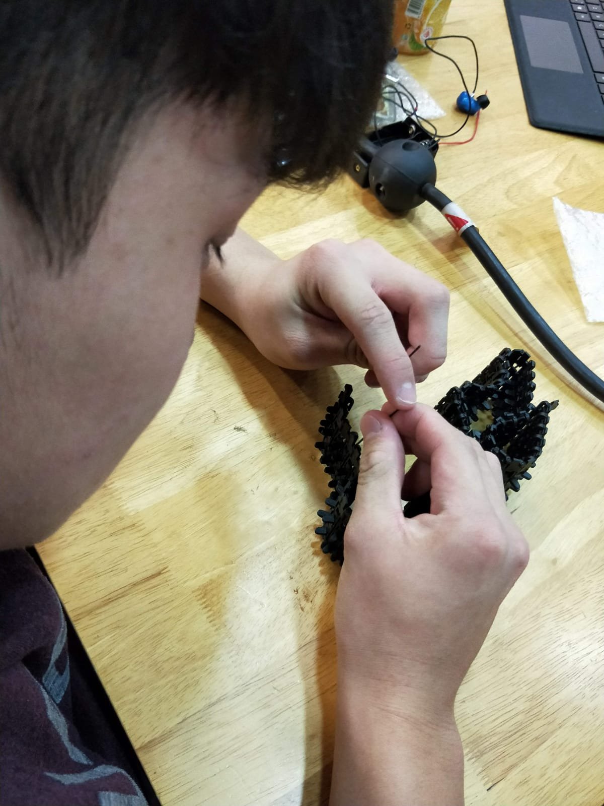

About Blog
We used ATOM text editor, a free text editor and previewer to design and organise our blog

Chassis
We aquired the tank tracks from aliexpress. The first step is to assemble the parts which we referred from .......During the assembly we realised that the tank tracks were loose and it needed to be tightened so that the tracks dont misallign. So we decided to reduce the number of tracks.

Adjusting the tank threads


Design Concepts
Eventually our team decided on a firefighting drone based on
tracked vehicle base.
We decided on a camera with a modular adapter mount for the drone.


Autodesk Inventor Assembly of Tank chassis


Servo

LCD screen

FPV runcam
Initially designed in inventor 2016 , and imported into Autodesk Fusion 360
Fusion 360 allows for multiple members to work on the project and to carry out a motion study

List of components

Many different components were used in the virtual assembly of the vehicle , some standard parts and many custom parts designed by ourselves


list of components in Fusion 360


Impression of drone operating in forest enviroment
the drone is intended for firefighting purposes and must be able to operate in difficult terrain such as on the forest floor
The treads allow for better traction control and the ability to move over rough surfaces
Video of testing the drone's ability to turn
Video Demostrating how to Operate the drone


Once the pieces had been 3d Printed , Final assembly of the frame could begin

Mechanical assembly of chassis
The chassis with 3d printed main frame and main electronics installed
The chassis consists mostly of a 3d printed plate as the main structual element,
with a box connected to the front housing the microcontrolers and power supply, and the rear housing a servo connected to the turret.
It is all held together by two M10 screws connected to the aluminium chassis.
Video of tank turret moving
Although the turret is intended to be modular, for our project we will demostrate the vehicle with a pump and hose connected via an on board water supply.
for the hosing, we decided to use standard aquraium air tubes


Pump with custom adapter attatched Air tube
Demostration of spraying water


Due to limited space and weight restrictions , the drone will operate via a tethered water supply
This will allow for improved performance and endurance.
Final Assembly of Drone
Here the final components of the turret are assembled and are moved to demostrate their ability to move


In this demostration, we have included a camera module to the turret.

The camera is broadcasting to a screen via a VHF signal , allowing us to get a live feed.